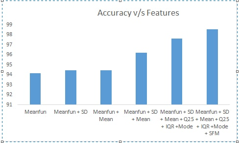

Initially we started out with some raw audio files from which we extracted 20 features using a program written in R. We ran random forest on these 20 features and got the 7 most useful features. The features are mean fundamental frequency, 25th Quartile ,standard deviation, Inter Quartile Range, specral flatness, mean frequency, mode frequency. These features were used to train a a voting based classifier that used the predictions made by 5 models along with their probablities to predict the final output. The models are Naieve Bayes, K-nearest neighbours, Support Vector Machine, Logistic Regression, Gradient Boosting Classifier.
- Mean frequency(meanfreq): Mean of the mean frequencies obtained in each window of the audio signal, measured in kHz.
- Standard Deviation of Frequency(sd): Standard deviation measures the amount of variation of data. A low standard deviation indicates that the values are close to mean, whereas a high standard deviation indicates that the data is moe spread out.
- First Quantile(Q25): Quantiles are the points dividing range of probability distribution into contiguous intervals with equal probabilities. It is the data value when the standard distribution goes beyond the first threshold. It is measured in kHz.
- Inter Quantile Range(IQR): Interquantile Range is the difference between the first (lower) and the third (upper) quartile and is measured in KHz. It is a measure of statistical dispersion
- Mean Fundamental Frequency(meanfun): Average of fundamental frequency measured across acoustic signal.
- Spectral Flatness(sfm): Spectral Flatness is a measure used in digital signal processing to characterize an audio spectrum. It is typically measured in decibels and provides a way to quantify how noise-like a sound is, as opposed to being tone-like. It is given by the ratio of the geometric mean and the arithematic mean of the power spectral density.
- Mode Frequency(mode): Mode frequency is the most frequently occurring frequency in the entire signal.
